Sentry (Robert Reynolds) (Terre-616)
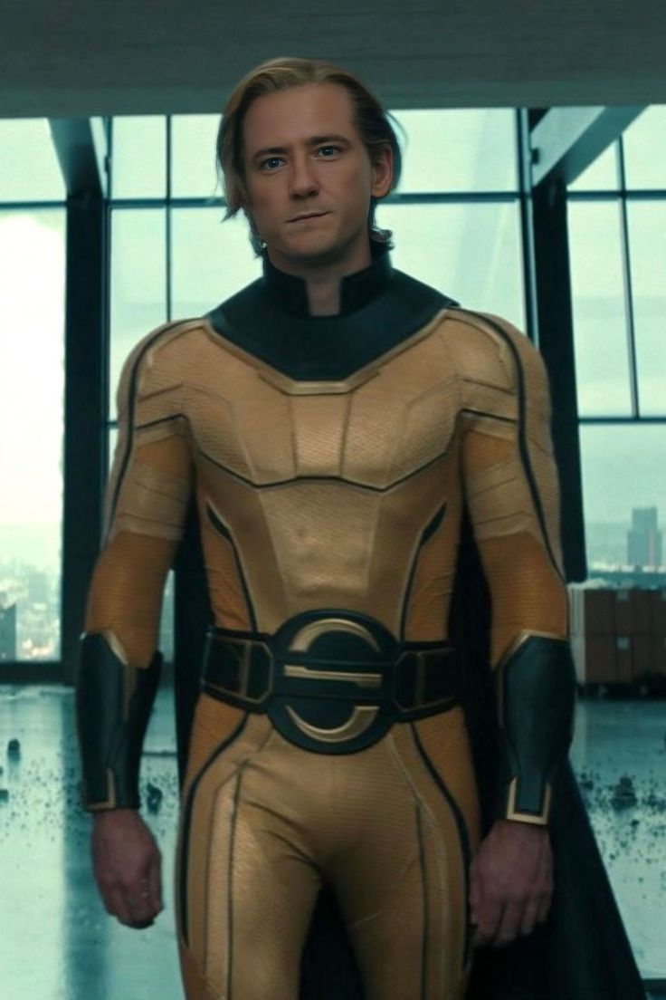
Origines :
Vers 1957, Robert Reynolds, un junkie, entra par effraction dans le laboratoire du professeur Cornelius, qui travaillait depuis 10 ans à l'élaboration d'une version surpuissante de Sérum de Super-Soldat, censé être 100 fois plus puissante que celui qui a donné ses pouvoirs à Captain America.
Il ingéra ce sérum, baptisé le « Project : Sentry », en pensant qu'il s'agissait d'une puissante drogue appelée Sentinelle Dorée.
Robert gagna alors la puissance d'un million de soleils en explosion, ce qui tua son partenaire et le gardien du laboratoire.
Les cadres du Project : Sentry, attirés par ce que leur irresponsabilité avait provoqué, persuadèrent Reynolds de les laisser tester ses pouvoirs dans leur laboratoire, mais ils ne purent le retenir très longtemps, ni calmer son désir d'utiliser sa puissance pour le bien de tous, et Reynolds fit ses débuts dans un monde qui avait commencé à oublier ses super-héros.
Il se vengea d'un jeune qui le harcelait à l'école, puis créa son premier costume.
Robert devint alors Sentry, un super-héros accepté par ses pairs, comme les Quatre Fantastiques, Spider-Man, le Professeur Xavier, et devint même ami avec Hulk.
Robert épousa Lindy, et eut jeune associé, Scout, avec qui il a partagé ses pouvoirs.
Un ennemi de Sentry, le Général, s'allia avec le Cerveau et captura le héros, pour que le mutant lui implante un virus mental en toute discrétion.
Le virus développa des troubles mentaux chez Sentry, au point où s'il utilisait ses pouvoirs, un démon apparaîtrait pour détruire le monde.
Ce démon était en réalité une personnalité réprimée de Robert.
Subconsciemment, Reynolds demande de l'aide en implantant ces souvenirs dans l'esprit d'un auteur de comics, Paul Jenkins, qui dessina alors son histoire dans sa BD.
Lorsque le Void fit son apparition (une personnalité sombre et destructrice de Robert), il manqua de tuer Scout et lança Hulk dans un état second à travers Manhattan, tout en tuant de nombreux civils.
En découvrant la véritable nature du Void, Sentry, le Docteur Strange et Mister Fantastic créèrent un système faisant oublier à l'entièreté du monde l'existence même du héros.
Sentry disparut alors, et le Void par la même occasion.
Quelques années plus tard, les souvenirs de Reynolds refirent surface, et plusieurs villes en Europe furent mystérieusement ravagées, en réalité par le Void.
Sentry contacta ses anciens alliés, mais seul Hulk se rappela de lui, parce qu'il était sous le forme de Bruce Banner au moment où le monde l'a oublié.
Tandis que le Void se rapprochait de Manhattan, et après avoir récupéré leurs souvenirs, les super-héros se rassemblèrent un à un pour défendre la ville.
Se rappelant de la double nature des pouvoirs de Sentry, Reed Richards réactiva la Watchtower, repaire de Sentry, bannissant le Void et faisant de nouveau oublier au monde l'existence de Sentry.
Quand le souvenirs de Reynolds revinrent à nouveau, il demanda à Nick Fury d'être enfermé au Raft, prétendant avoir tué sa femme.
Peu après, Electro provoqua l'évasion de près de 90 prisonniers surhumains.
Plusieurs héros sur place, comme Luke Cage où Spider-Man, furent vite dépassés mais Foggy Nelson supplia Sentry d'aider ses amis, menacés par Carnage.
Sentry l'empoigna alors et l'emporta dans l'espace, le tuant en le déchirant en deux.
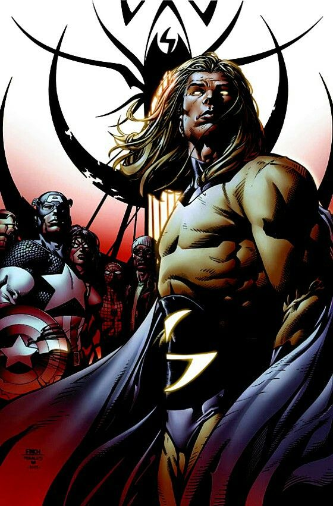
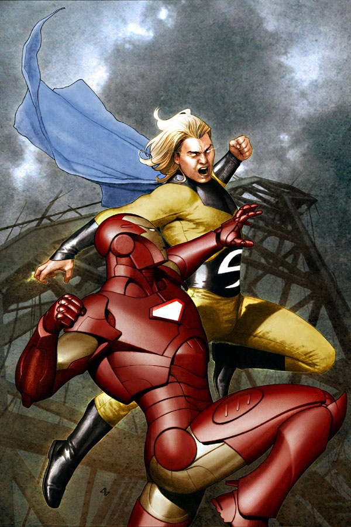
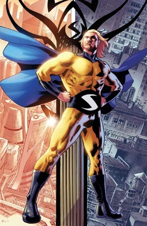
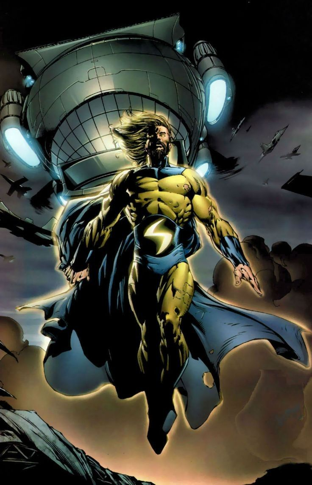
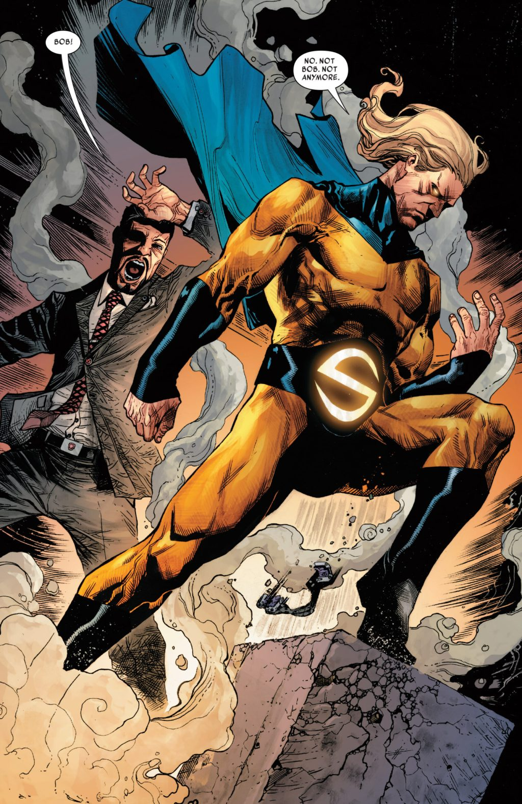
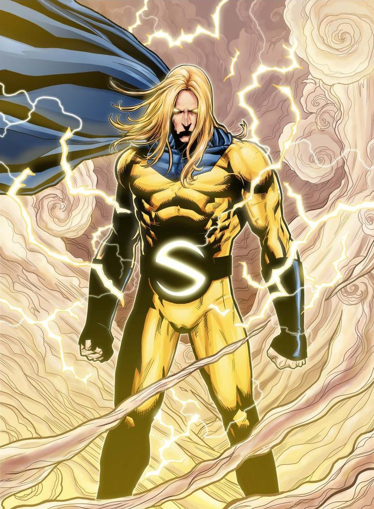
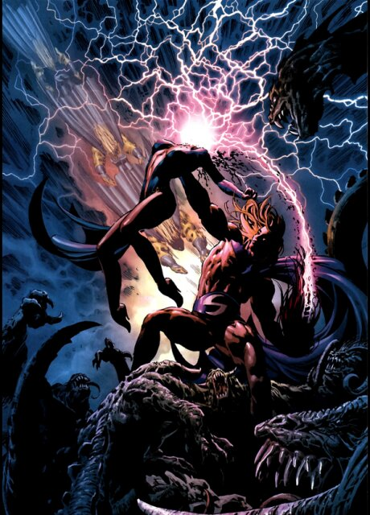
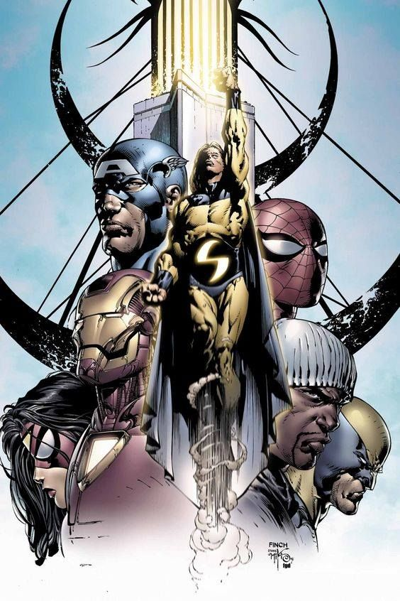
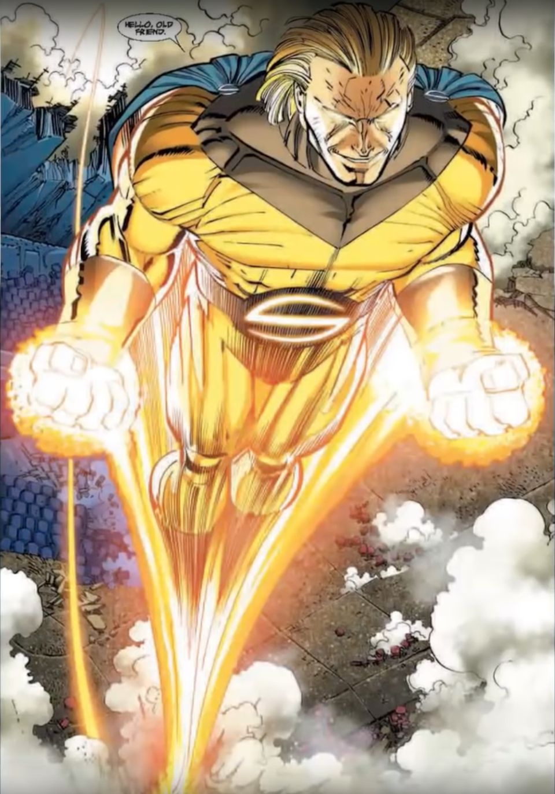
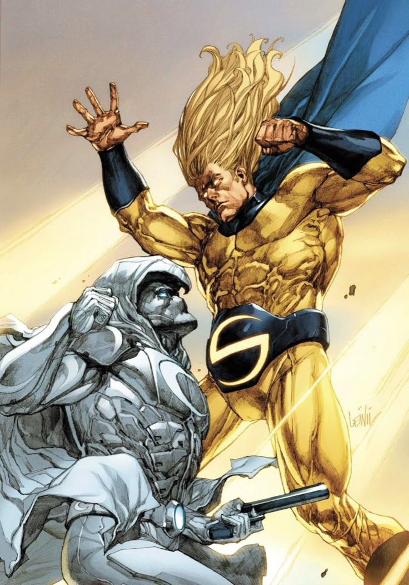
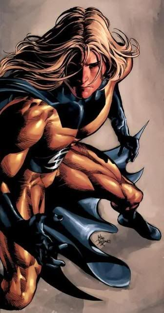

Personnalité :
La personnalité de Sentry est l'une des plus complexes et tragiques de tout l'univers Marvel.
Il est littéralement partagé entre deux entités parfaitement opposées.
- D'un côté le Sentry, un être de lumière et de bonté, symbole d'espoir et de puissance héroïque,
- De l'autre le Void, son double maléfique, incarnation de ses peurs, de sa haine et de sa dépression.
C'est cette dualité qui fait de lui un personnage instable, en lutte constante contre lui-même.
Plus il utilise ses pouvoirs de Sentry, plus le Void sera puissant.
Robert souffre de troubles mentaux graves, notamment une dépression profonde, une anxiété extrême et une schizophrénie (ou trouble dissociatif de l'identité selon les versions).
Malgré ses failles, Sentry souhaite sincèrement faire le bien.
Capacités :
Les pouvoirs de Sentry sont issus du sérum de Super-Soldat qu'il a ingéré.
On prétend que Sentry possède le pouvoir d'un million de soleil en explosion.
- Il a une force physique hors-du-commun, c'est un des êtres les plus forts de l'univers.
Il a été capable de déchirer Carnage en deux, de prendre la hache de Terrax et de la briser, ou de surcharger les pouvoirs de l'Homme-absorbant. - Sentry peut penser, se déplacer et réagir à une vitesse extraordinaire.
Il peut attraper des balles en plein vol, et réagir au delà de la vitesse du son. - Il est virtuellement infatigable, seul son état mental peut affaiblir sa constitution.
- Il est également très intelligent. C'est un expert en mécanique, en architecture, en machinerie, en électronique, en cybernétique, en robotique et en informatique.
- Les sens de Sentry sont incroyables. Il est capable d'entendre le moindre décibel, sur n'importe quelle fréquence.
On l'a déjà vu montrer assez de contrôle pour couper les sources sonores environnantes pour se focaliser sur le battement de cœur d'un moustique situé en Afrique Centrale, alors qu'il était lui-même aux États-Unis. - Il peut voler à des vitesses hypersoniques, dépassant Mach 10 sans subir de dégâts.
Hors de l'atmosphère, il peut se déplacer jusqu'au soleil plus rapidement que la vitesse de la lumière, dépassant les lois physiques et courbant l'espace-temps. - Il est complètement invulnérable aux coups, sauf s'il accepte volontairement d'être blessé.
Il peut survivre au vide spatial et résister à des températures et des pressions extrêmes sans aucun traumatisme. - Il est immunisé face aux radiations, et n'a pas besoin de manger. Il a cependant besoin d'eau de temps en temps.
- Sa principale source d'énergie est le soleil, mais il est capable de tirer son énergie de toute chose, même dans la Zone Négative ou le Microvers.
- Il peut partager son pouvoir avec d'autres, comme il l'a fait avec Scout.
- Il peut générer, contrôler et émettre de la lumière, s'entourant d'un halo brillant.
Cette lumière est quasi-solide et suffisamment résistante pour bloquer un rayon d'énergie. - Il peut contrôler la direction, la fréquence (couleur), l'intensité et la durée de la lumière produite.
Il est capable d'aveugler (littéralement) les personnes autour de lui. - Il est capable de dévier la lumière le frappant afin de devenir invisible.
- De manière offensive, il peut générer des ses mains ou de ses yeux des rayons de force jaunes, des rayons photoniques ou des ondes de chaleur, capables de brûler la peau de Hulk et d'abattre des immeubles, ou de pulvériser un homme.
- Il possède une vaste énergie psionique qu'il a utilisé pour permettre au professeur Xavier d'effacer tout souvenir de lui à l'ensemble de la population terrestre.
- Il a une longévité accrue, son corps ne vieillissant plus.
- Son pouvoir lui permet de guérir de toute blessure.
- Bien qu'il ne maîtrise pas ce don, Sentry est capable de se ressusciter et de ramener des êtres à la vie.

Costume :
Sentry possède une combinaison quasi-complète d'un jaune doré éclatant, avec un grand « S » brillant stylisé à la ceinture.
Il a une cape flottante, des bottes et des gants bleus, ainsi qu'une ceinture avec une boucle dorée.
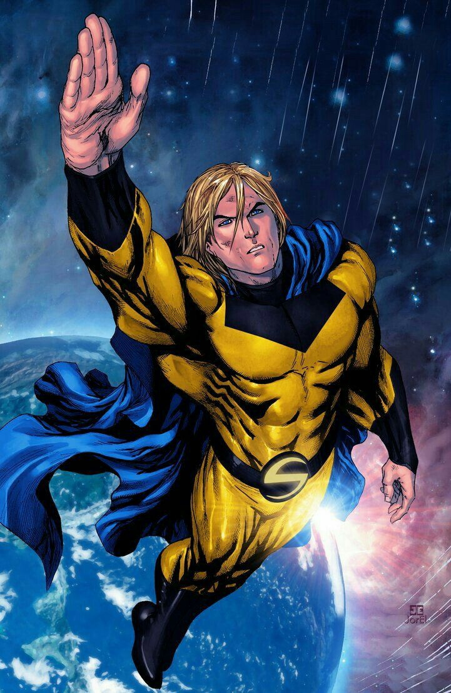
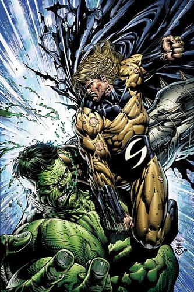
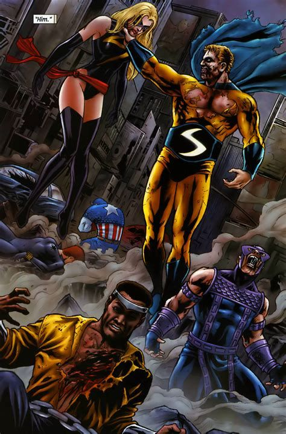
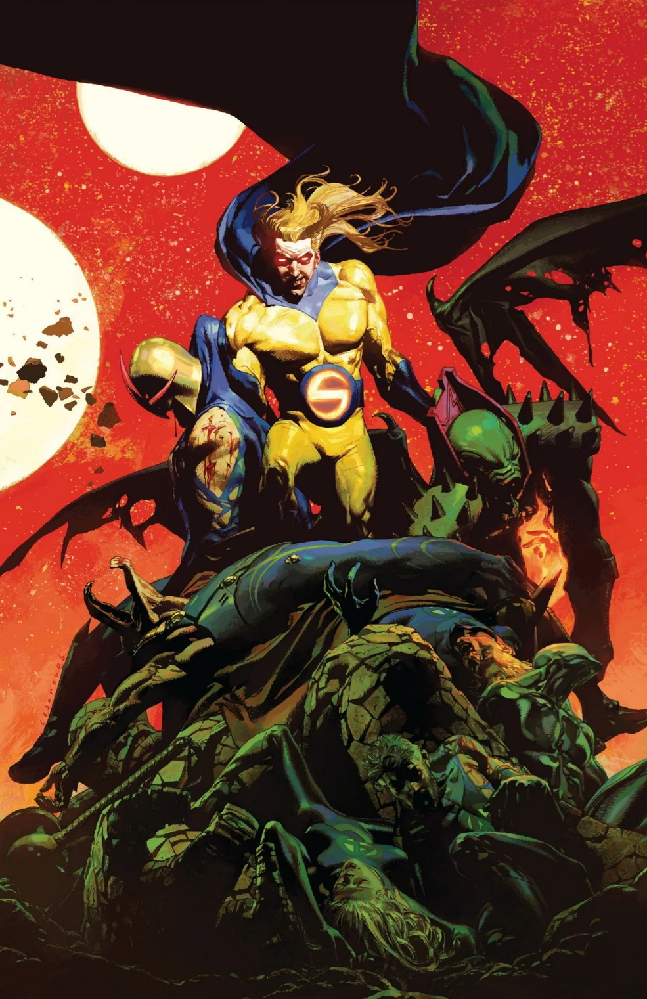
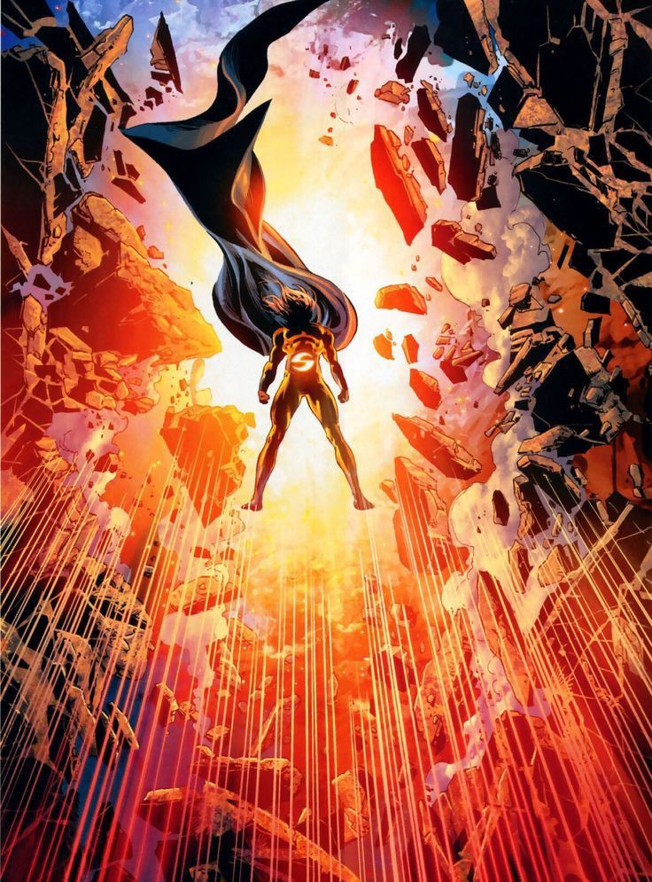
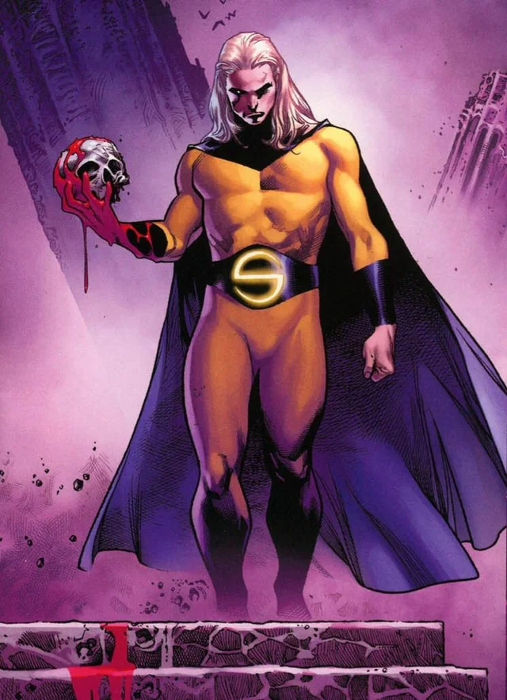
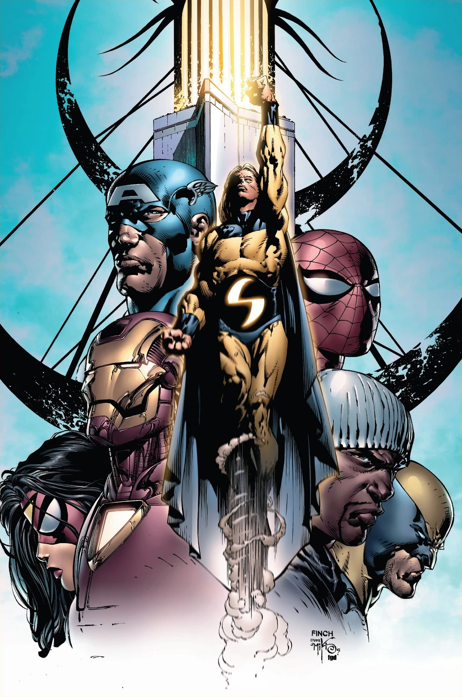
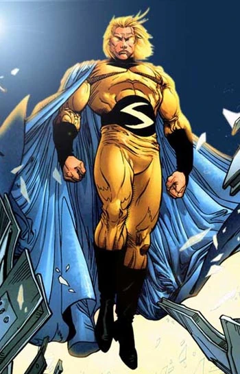
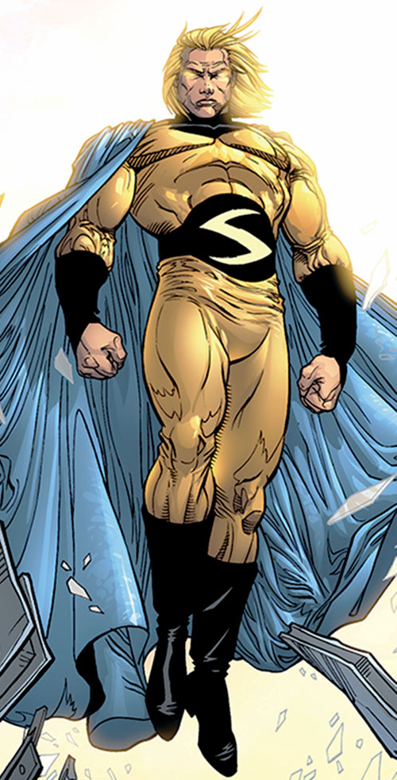
Les principaux ennemis de Sentry
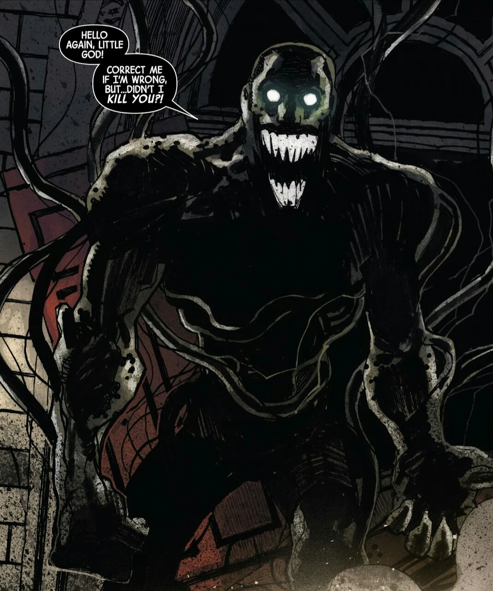


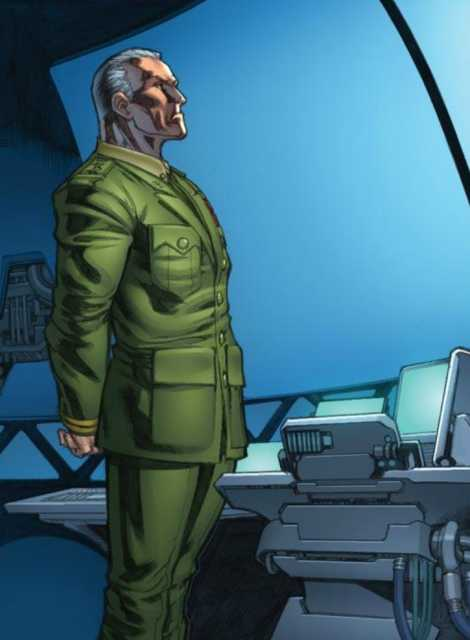
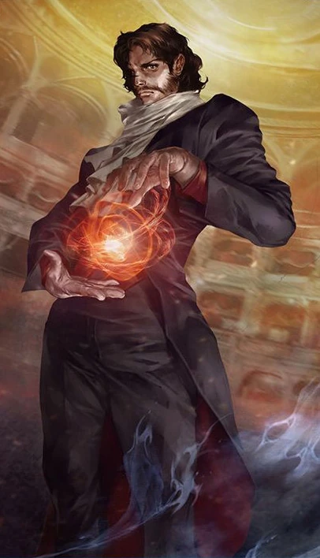
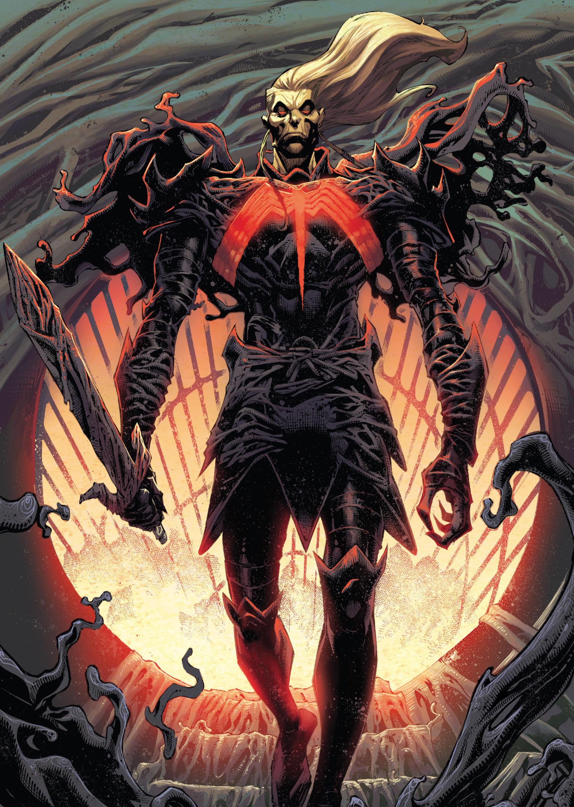
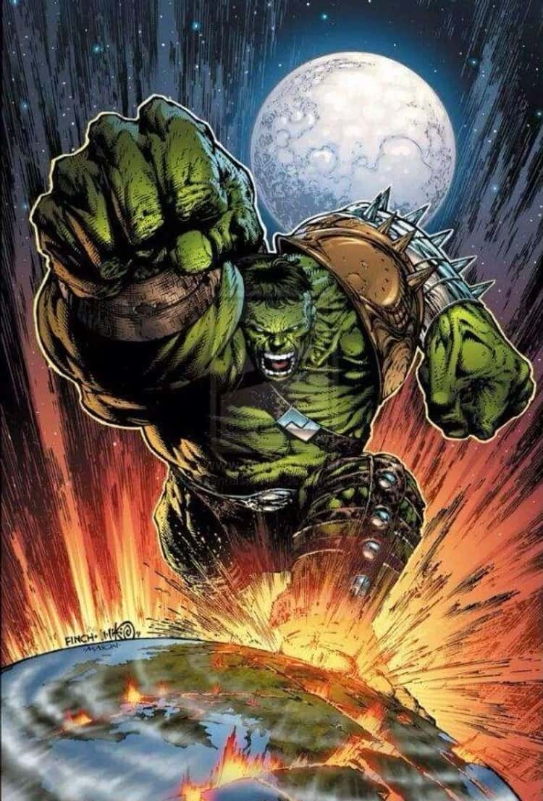
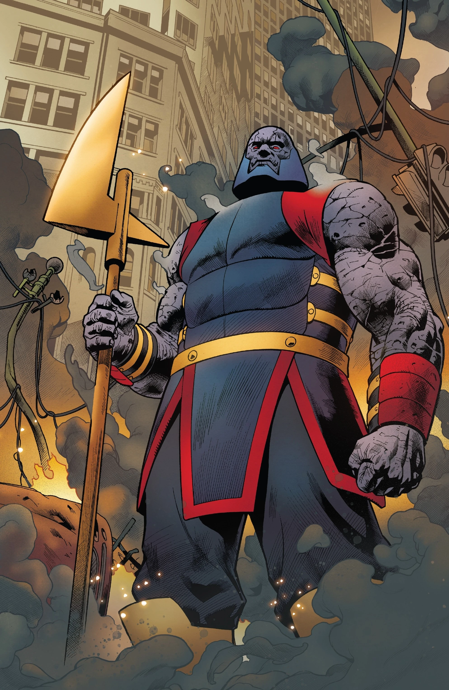
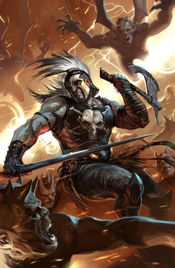

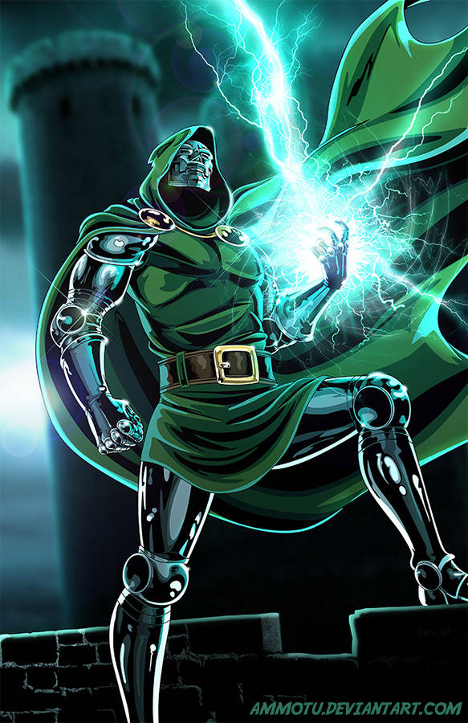
Équipes affiliées